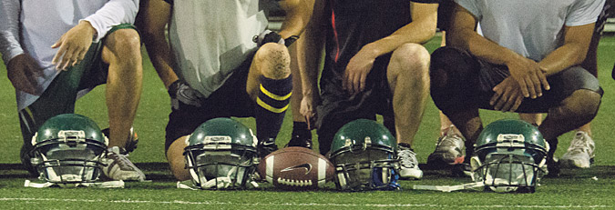

¿Como nacio el futbol americano en Antioquia?
Cuenta la leyenda como Pablo Orozco, tackle defensivo de Hunters de medellín, que en el 2007 sin protecciones y sin saber bien las reglas del juego el futbol americano nacio en medellin, con equipos como Eagles, ahora conocidos como Lobos, y Hunters, el futbol americano se volvio una realidad, jugando en el round point de la 80, en ese entonces era "manga", 22 hombres empezaron una historia que a día de hoy aún continua.
